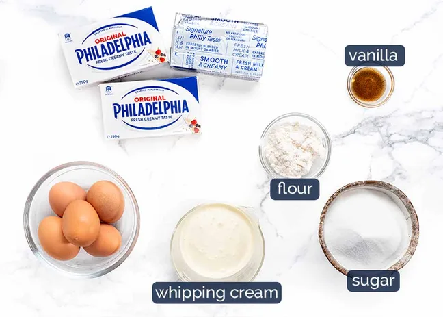

Sample Imagery

Burnt Basque Cheesecake
Basque cheesecake, also known as cheesecake San Sebastian or burnt Basque cheesecake (Basque: euskal gazta-tarta, Spanish: tarta de queso vasca), is a crustless cheesecake originating from the Basque Country, Spain. It has a caramelized, nearly burnt exterior and creamy, custard-like interior, achieved by baking at high temperatures.
Ingredients Unsalted butter (for pan) 2 lb. cream cheese, room temperature 1½ cups (300 g) sugar 6 large eggs 2 cups heavy cream 1 tsp. Diamond Crystal or ½ tsp. Morton kosher salt 1 tsp. vanilla extract ⅓ cup (42 g) all-purpose flour
Basque cheesecake can be made 1 day ahead. Cover and chill. Let cheesecake sit at room temperature for several hours to remove chill before serving.
Dietary Considerations: Vegetarian, Gluten-Free (with gluten-free flour)
Prep Time: 20 minutes | Cook Time: 1 hour | Total Time: 1 hour 20 minutes | Servings: 10-12
Equipment Needed: 10" springform pan, parchment paper, stand mixer
Do Ahead: Basque cheesecake can be made 1 day ahead. Cover and chill. Let cheesecake sit at room temperature for several hours to remove chill before serving. A slice of Basque cheesecake as seen from the side.
This site offers a detailed, step-by-step recipe for Basque Burnt Cheesecake, complete with helpful tips and clear instructions. The photography is high quality and the layout is easy to follow, making it a great reference for both novice and experienced bakers. The inclusion of background information about the dessert adds context and interest.
Allrecipes offers a popular, well-reviewed version of Burnt Basque Cheesecake with straightforward instructions, user ratings, and helpful tips from the community.
Spanish Sabores provides an authentic Spanish take on the dessert with clear steps, cultural context, and practical tips from a Spain-based food writer.
The New York Times uses a news-first layout with strong typography, clear hierarchy, and responsive design that emphasizes readability and accessibility.
Apple’s website is a classic example of clean, minimalist design with a focus on product imagery and intuitive navigation. The use of whitespace, large visuals, and concise copy creates a premium feel. The site’s responsive design and accessibility features are also noteworthy.
This site excels at presenting complex data in visually engaging and easily digestible formats. The creative use of color, infographics, and interactive elements makes information accessible and memorable. It’s a great source of inspiration for effective visual communication.